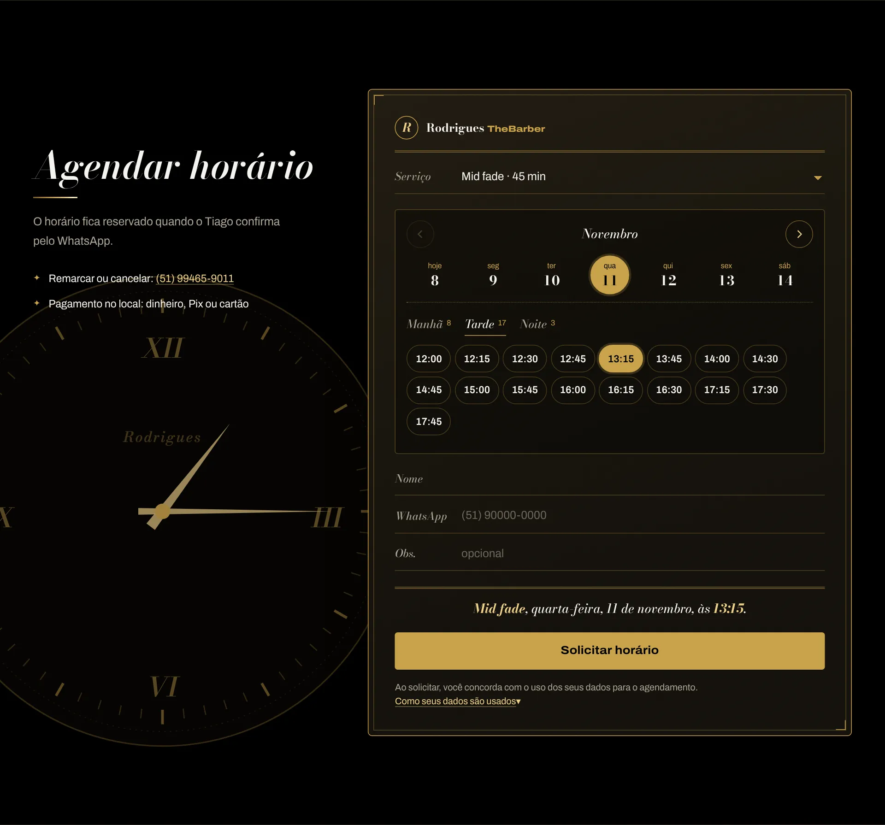
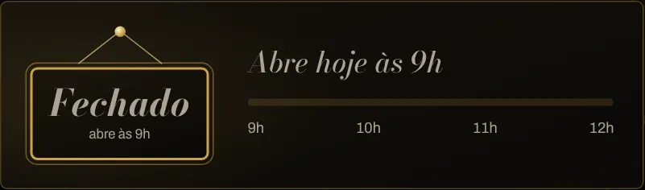
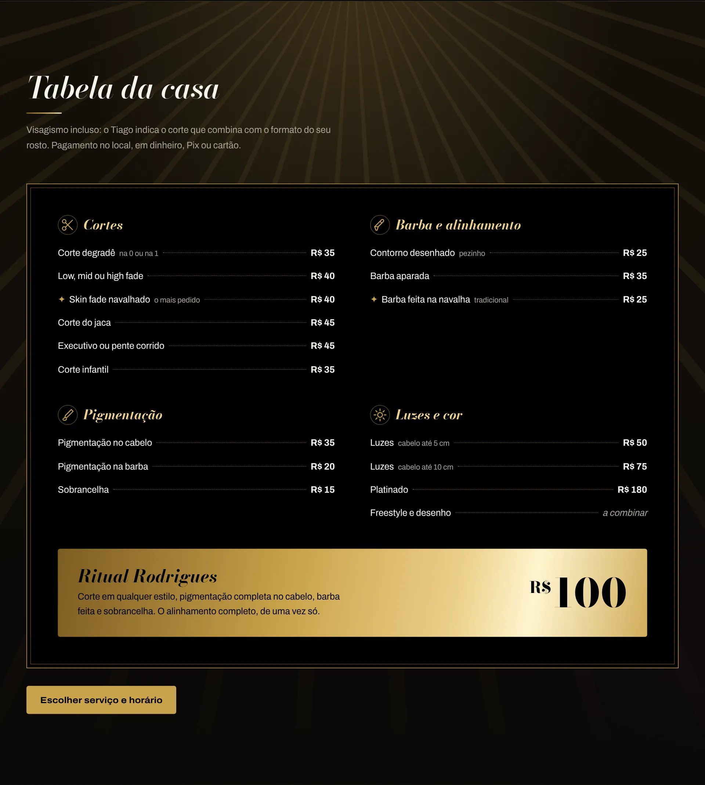
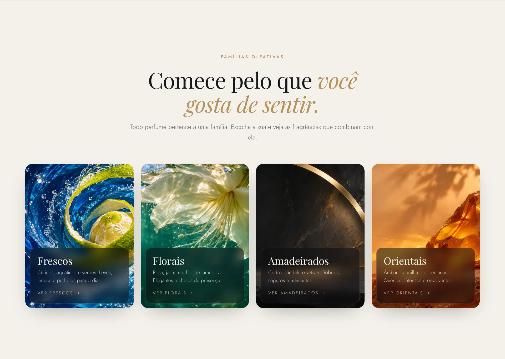
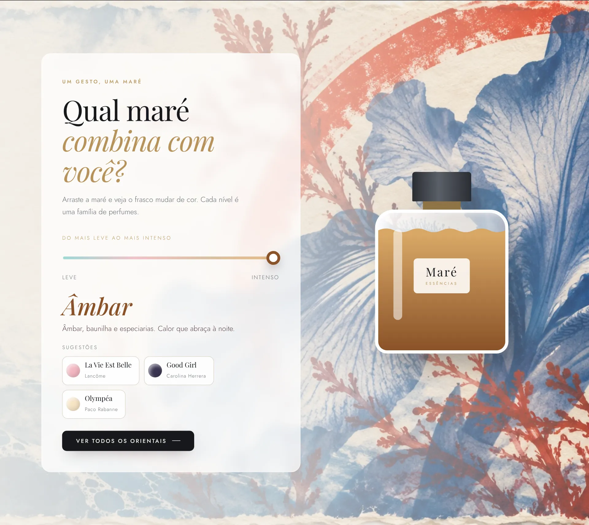

Barbearia · Eldorado do Sul · no ar
Rodrigues TheBarber
- Agenda conectada
- Relógio no horário escolhido
- Barra de agendar no celular
- Placa aberto/fechado




Desenvolvo sites para negócios locais: identidade, interface e código, do rascunho à publicação.


Rodrigues TheBarber · barbearia
Dois sites, vistos de perto.
Barbearia · Eldorado do Sul · no ar





Perfumaria · protótipo, sem vendas





O que não aparece na tela.
Pedidos de teste nunca chegam ao cliente.
Quem recebe os dados, sem rastreadores.
A página só carrega o que é dela.
WebP e código sem frameworks.
Instruções em português para o dono.
Estou no começo, aprendendo a cada projeto e levando cada detalhe a sério.
Moro em Eldorado do Sul (RS). Cuido do conteúdo, da interface e do código, do primeiro rascunho à publicação.
Tem um negócio que precisa de um site?
Conte sua ideia, sem compromisso. Eu mesmo respondo.